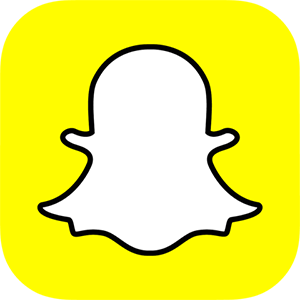
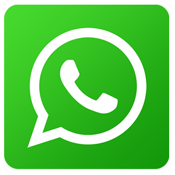
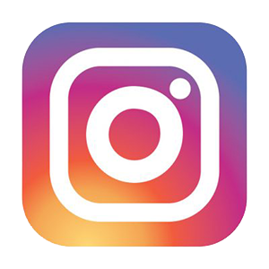

Applications using in social meadia
There are tons of social networking apps available these days offering different amazing services. Here we have listed a few trending social media apps which are included in must haves of most of the people.
1. Snapchat:

It is an over rated extremely popular private messaging app for sharing photos and short live videos having a touch of fun elements attached with it. Snapchat works on the idea of ephemeral messaging which means once the message or snap is viewed, it will be disappeared forever.
The interesting part of Snapchat is that it is not only a photo sharing or a messaging app; you can also do marketing for your business on it as well and if you are not using it for marketing, you can still download the app to have an eye on the others to know what’s going on in the market and how others are using Snapchat precisely for their business.
We can say with over 100 million active users daily, Snapchat is the future of social media.
2.Whatsapp:

Being a messaging app Whatsapp has more users than Linkedin, Instagram, Twitter and Pinterest combined. Whatsapp not only allows you to send text but also allows you to share photos, videos, location, update status and make voice and video calls over the internet. One can download the app on mobile and computer and also use it on the web as well.
Whatsapp is one of the life-saver through which you can stay connected to your friends and family even when you are on your international trip. It is widely being used for marketing and dealing in businesses by the marketers as well.
3) Twitter:
It is one of the biggest platforms to share real-time news and get connected with famous personalities around the word like CEOs of big companies, politicians, celebs etc. Millions of people around the world tweet about various topics and trending news using relevant hashtags and there are many other apps to help them to do that.
Twitter is also a very popular medium which is being prioritized by many companies for the digital marketing of an individual or for a business. Again like any other social networking app, you can also share photos, videos, and GIFs on it.
4) Instagram:

No one is unknown of the fact that Instagram is most popular image sharing app. Facebook might rule over the web for its image sharing feature but Instagram undoubtedly ruling over mobile. It also allows you to share video clips. Instagram has proven itself as a boon for the e-commerce businesses. One can share their product’s images and videos along with appropriate hashtags to reach out to the maximum number of audience.